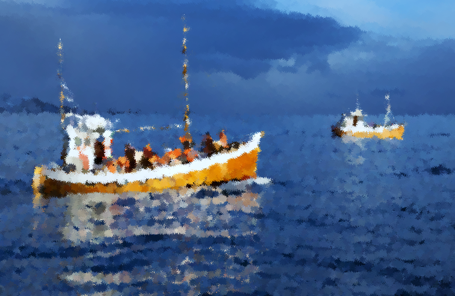
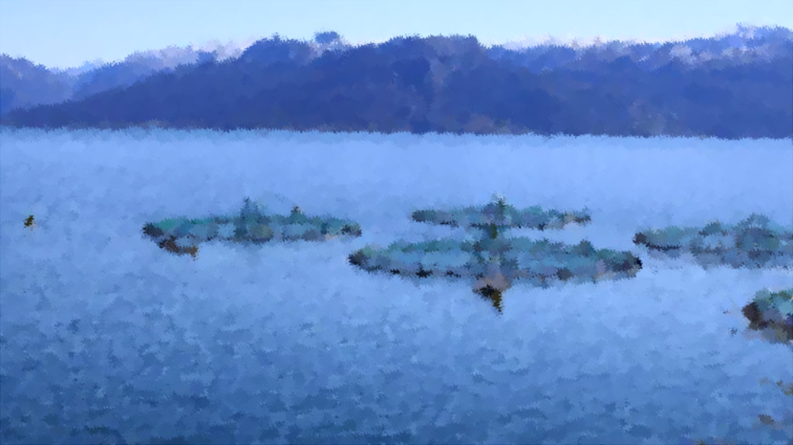
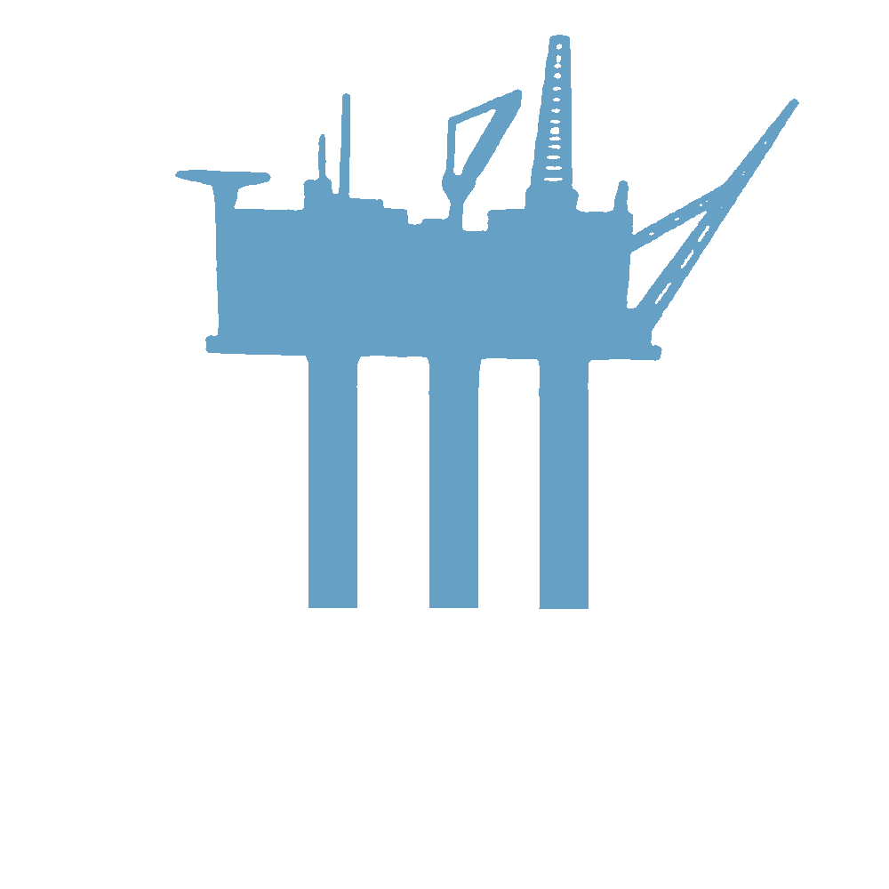
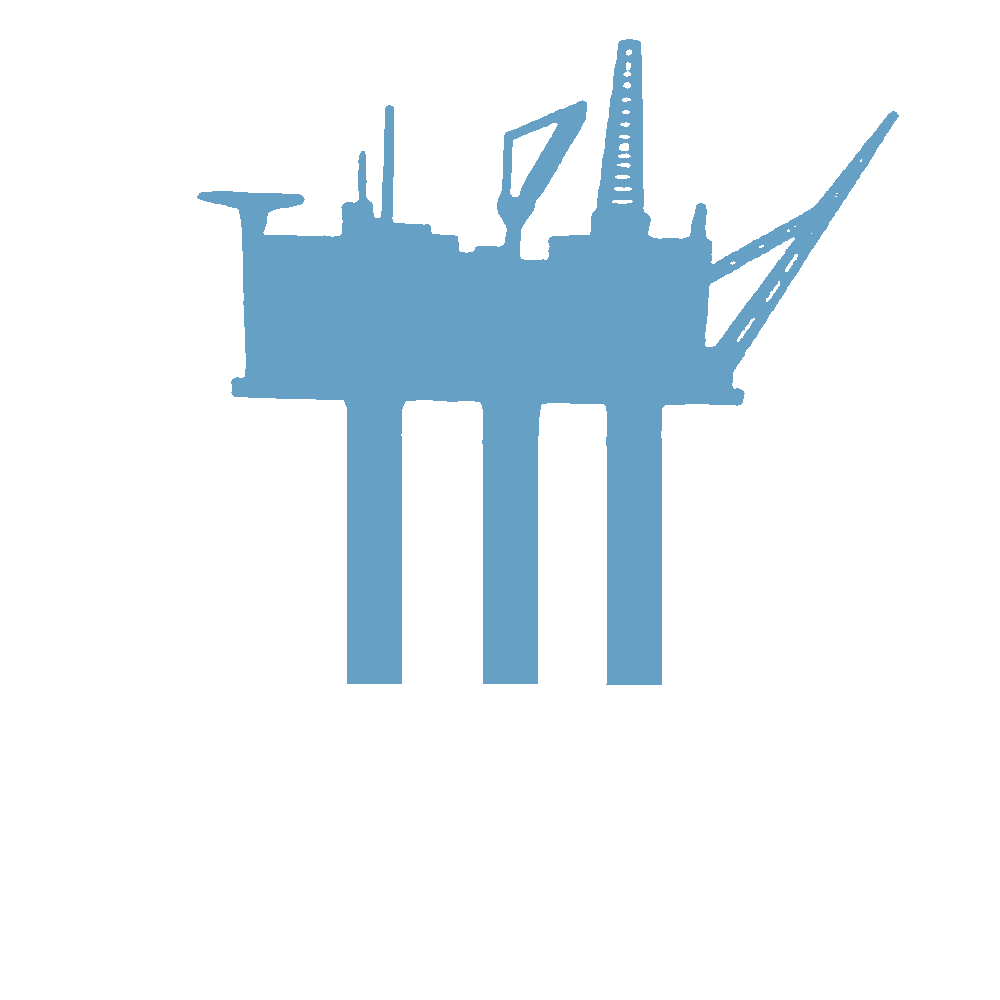

The human population has never been this big before, and with 385,000 babies being born every day we are rapidly reaching the 8 billion people mark. With an increasing population there is also an increasing demand for food rich in protein, however traditional agriculture is having a hard time keeping up with the demands and it is impossible to maintain sustainably. Is this where the salmon industry swoops in and saves the day?

The Atlantic salmon (Salmo salar L.) is arguably the world’s most iconic fish: it’s crimson pink flesh, smooth texture and distinct flavour makes it an appealing ingredient in many dishes around the world. What makes the salmon a particularly great fish is that it has a big meat yield and up to 60% of its body mass can be consumed. Additionally, the meat is an excellent source of protein (containing all the 9 essential amino acids), as well as healthy fats such as omega-3 fatty acids.
Global supply of salmon (farmed and wild) was estimated to 3.6 million tonn in 2018
But where does the fish come from?
The fishery industry
...
The Aquaculture industry
Today, most of the salmon we consume worldwide comes from the aquaculture industry and the countries with the largest production is Norway and Chile. Together, Norway and Chile’s production amounted to around 80% of all the farmed salmon in 2018. In 2020, Norway’s Aquaculture in particular has grown rapidly over the years, from its humble beginnings in the 1970s where production was close to 500 tonnes, till 2020 where it reached close to 1.4 million metric tons!
It is hard to comprehend such a massive amount, so let’s put it into perspective...


 

 

So then, how are the fish farmed?

Adult farmed salmon is kept in large system floating cages, usually suspended in the ocean. The largest pens have a volume up to 315 000 m3 and can house up to 200 000 fish, meaning each individual fish have 1.5 m3 of space.
The salmon will be kept here up to two years, until they have reached the ideal weight of 3-5 kg. Then the salmon will be harvested and slaughtered. A few individuals will be chosen as broodstock to make more salmon, and the cycle repeats.